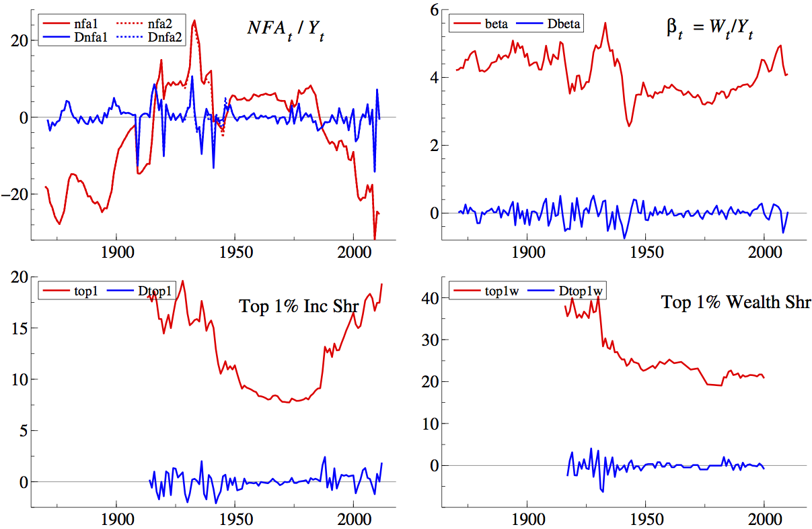
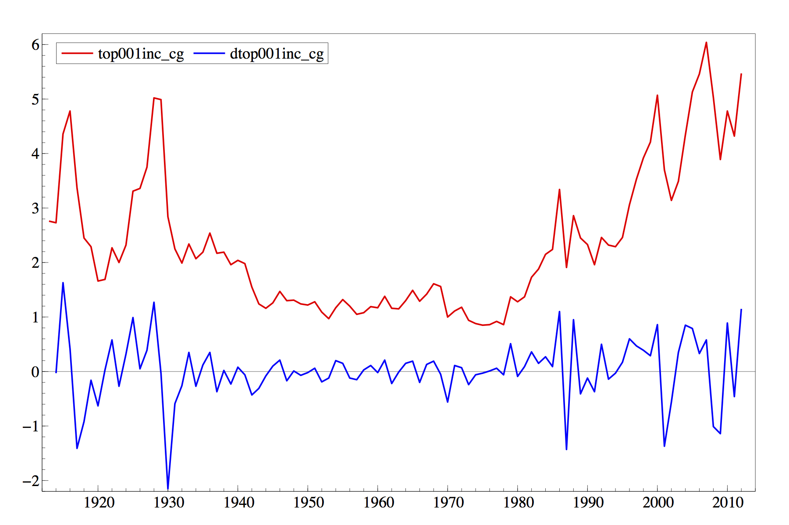

[Job Market Paper] A Network Model of Wealth Inequality and Financial Instability
.pdf
Application of Social Network Analysis in the Estimation of Bank Financial Strength During the Financial Crisis.
with Michelle Morales, David Guy Brizan, Hussein Ghaly, Min Ma, Syed Reza, and Andrew Rosenberg in NLP Unshared Task in PoliInformatics, 2014.
.pdf


Income and Wealth Distributions: An Application of Copulas
with Hui Liu
Working Paper: May 2014
.pdf
